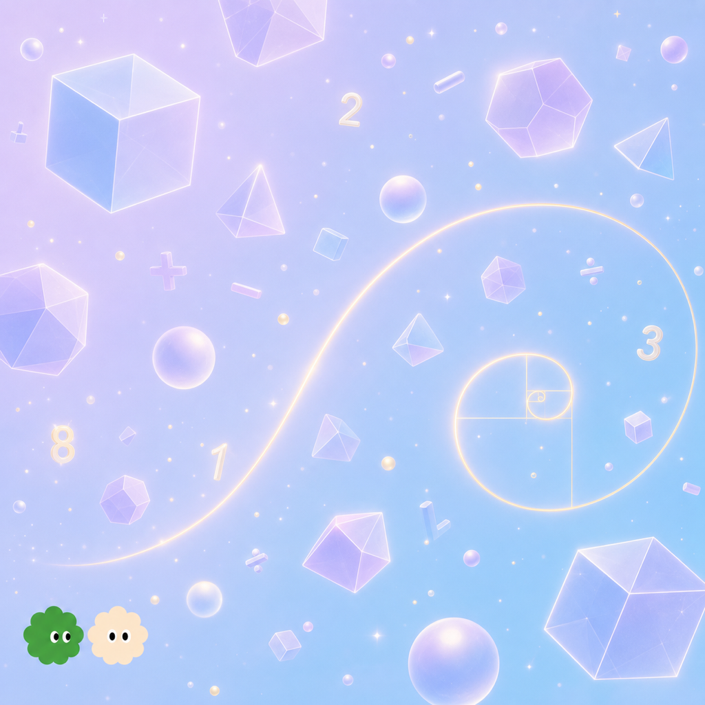
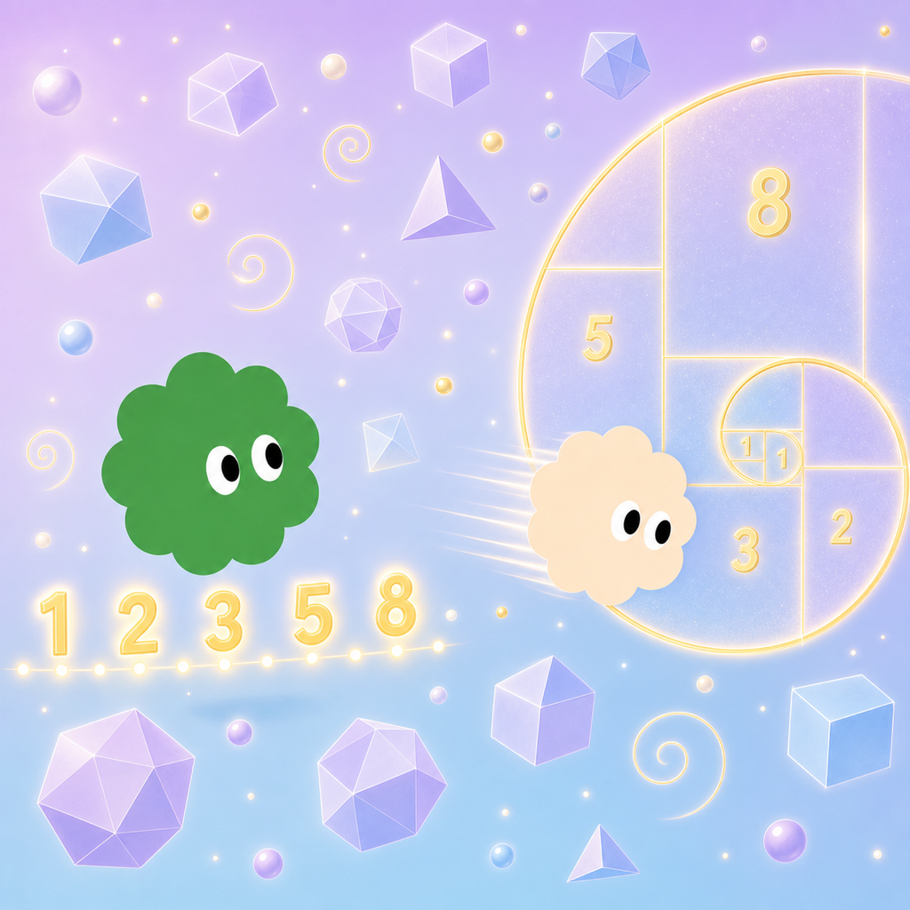
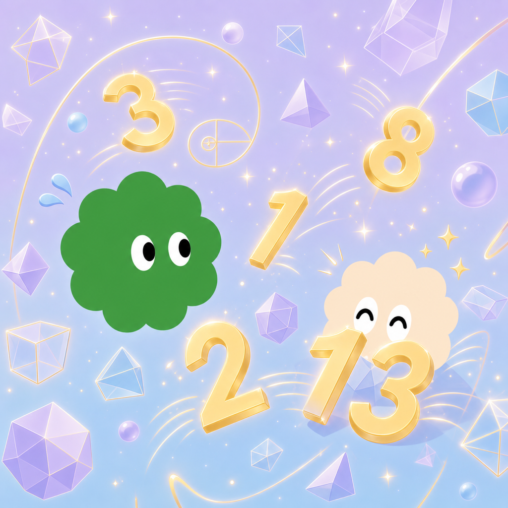

本檔為給作者與設計部門看的最終樣子：橫書、由左到右閱讀，每個跨頁左半為故事文字、右半為整張插圖。共 3 個連續跨頁，依故事節奏拆分（鋪陳數學世界 → 兩位主角 → 對話高潮）。
圖片為薰衣草紫＋天空藍定調版（scene01_p1／p2／p3）。頁面以柔和、乾淨、偏淡的中性薰衣草灰白底襯托插圖，大量留白、襯線書卷體（Noto Serif TC），保持繪本般高級乾淨感。
在所有世界的最裡面，有一個數學的世界。那裡沒有天空，沒有地面，沒有樹、沒有石頭，也沒有任何一件真正的東西。漂浮在那裡的，全都是數學——會發光的立體幾何慢慢轉著，數字和符號像灰塵一樣飄，還有一條一條金色的螺旋，從很遠的地方捲過來，又往更遠的地方捲回去。整個世界是乾淨的藍紫色，很安靜。

世界裡住著兩個傢伙，NumNum 和 Numi。他們每天做的事，就是研究數學。NumNum 喜歡把東西弄整齊。它會量一量漂浮的圓，看它到底繞了自己幾圈；會把散落的數字一個一個排好，排成左右對稱，然後退後幾步，滿意地端詳很久。Numi 剛好相反。Numi 最愛追那條金色的螺旋——那螺旋是一格一格的方塊接起來的，一格、又一格、兩格、三格、五格、八格，越接越大，繞成一個像海螺殼那樣越捲越小的弧。Numi 張開手追著它跑，想抓住最中間那一點。

「NumNum！你看你看！」Numi 一邊跑一邊喊，「我快抓到中間了！」「你抓不到的。」NumNum 頭也沒抬，繼續排它的數字，「那個中心永遠在更裡面一點點，這是它的規則。」「才不要管什麼規則——」Numi 加速衝刺，結果一個沒煞住，整個撞進 NumNum 剛排好的數字堆裡，把對稱的隊伍撞得東倒西歪。NumNum 看著滿地亂掉的數字，嘆了一口氣。Numi 從數字堆裡爬出來，咧嘴笑了笑，一點也沒有要道歉的意思。這樣的日子，一天接著一天。數學很有趣，可是這個世界實在太安靜了——安靜久了，難免會有那麼一點點，無聊。
